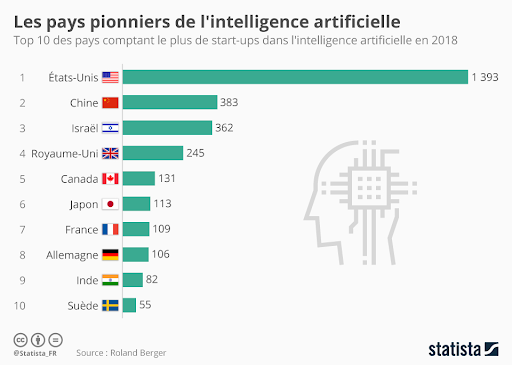
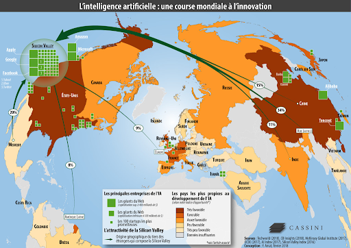

Où se situe nos principaux acteurs ?
On remarque que ce sont les pays du nord qui sont les acteurs principaux dans le domaine de l’intelligence artificielle. En effet, au vu de ces données, il est évident que ce sont les pays les plus riches et développés qui sont les plus avancés dans ce domaine.
|  |  |
|---|
Les rôles de l'Etats et du marché.
"Un écosystème d’excellence et de confiance." C’est ainsi qu’était affirmée la vision européenne de l’intelligence artificielle dans le Livre blanc sur l’intelligence artificielle publié en février 2020.
Avec la proposition de nouvelle réglementation sur l'IA présentée le 21 avril 2021, la Commission européenne réaffirme l’importance stratégique de l’IA pour l'Europe et la nécessité d’encadrer son usage dans les différents secteurs d’application.
L’approche de la Commission européenne en matière d'intelligence artificielle se fonde d’abord sur une identification et un encadrement des risques :
Les risques inacceptables dans le champ de la sécurité, des moyens de subsistance et des droits des personnes ;
Les risques élevés dans les domaines touchant les infrastructures critiques (énergie, transports…), l’éducation, la formation professionnelle, l’emploi, les ressources humaines, les services privés et publics essentiels, le maintien de l’ordre, la justice, les processus démocratiques, etc.